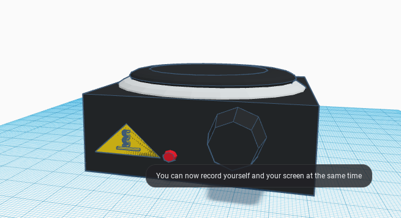
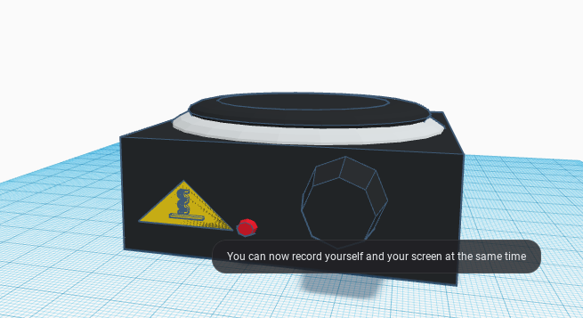

8-19-22: I learned how to make/start a website.
8-23-22: I learded how to make add background color and add images to my website. I also added a link for a recipe on how to make homemade sushi.
9-2-22: These past few days we've done tinkercad, a new challenge, and started our first project on mechanical engineering called The Rube Goldberg Simple Machine. We learned about what other types of engineering there are. We got onto tinkercad to create 3d models (to scale) for our project. We started our project this week creating a model of how to pop a balloon, while a starting with a baseball. Everything must be to scale when we create the project with cardboard and other materials. Our last challenge involved tinkercad of creating/trying to create an exact replica of a home appliance.
 

9-16-22: The last 2 weeks in class we've started creating our projects on tinrkercad. We finished them adn then were divided into groups of 4. Once in our groups we explained and looked at their cads and chose what parts we needed to create our project. We each took one part from our individual cads and put them together in a single cad. Then we rearranged them to make one final design before building. Once we finished our cad we started to build our project with cardboard and tape. My group was able to get all of our parts done and we started putting them together. When we got to constructing our pully system, we ran into a few problems. We had to needed to create a new base for the pully and measured how much string we need to use. Once we finish our base we will be able to finish putting all the parts together and then we can test it. Aside from our project, yesterday we did a challenge involving paper. We had to use one piece of paper to hold an object that was water proof. The piece of paper floated in water for 5 minutes holidng a water proof object. My group of 4 tried building a paper boat which ultimately we messed up. So we started folding the paper to have sides and then we put 4 quarters inside. We were group 1 and went first with 3 other groups. Many of the other groups that went after and with our group got water loged or sank. Our "boat" showed no signs of water or sinking. Of everyones boat I think that team 1 (my team) deserves to be in the top 3 or 5. The other boat that did well was one that didn't fold anything and it was just a flat piece of paper. Although it was only holding 2 other boats that sank. The other boat that was funny was one that had around 5 pens, 5 glue sticks and 4 dry erase markers.
Paperboats